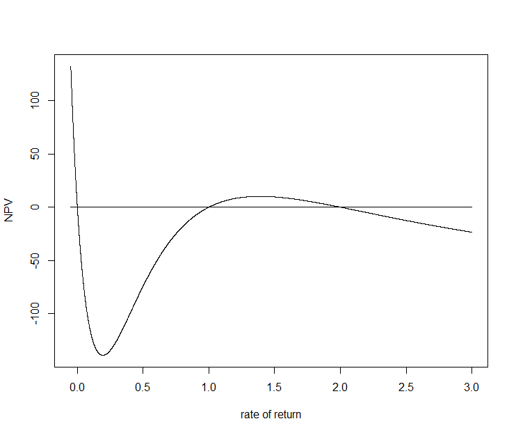
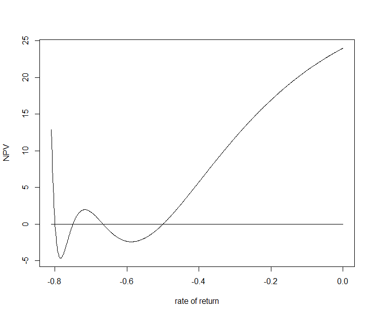

The Interpretation of The IRR and Its Disadvantage
Table of Contents
1 Time Value of Money (TVM)
Time value of money is the fundamental idea of modern finance. It can be conveniently summarized by the phrase:
The one dollar you get tomorrow worths less than the one dollar you get today.
For example, suppose that your friend borrow $100 from you and he promises to pay you back $100 tomorrow, it is financially unwise to engage in such a transaction because at the very least, you can deposit the $100 into a bank and earn some interest which make the value of the $100 abit higher tomorrow. So should you have borrow the money to your friend, you would have lost the interest. The whole idea is that money can be used to make money and the proportion of the earned money to the original investment is called the rate of return or interest rate. (This seemingly innocent idea of making money by merely lending money is called usury and was banned by a lot of religions and countries because of moral issue. However, it is now a corner stone of modern banking system and fractional reserve system, which practically make money as a form of debt)
Suppose that we put $10 into an investment (bank deposit is also a form of investment), which can generate 5% of interest annually, then at the end of the first year, the total money that we have will be the original $10, which is called principal, plus the interest.
$$ 10 + 10*0.05 = 10(1+0.05) $$
At the end of the second year, we would have
$$ 10(1+0.05) + 10(1+0.05)(0.05) = 10(1+0.05)^2 $$
The pattern here is that: given that the initial money we have is denoted by \(PV\) (Present Value), the interest rate is denoted by \(r\), then after \(n\) years, the total value of the money can be denoted by \(FV\) (Future Value) can calculated via the formula:
$$ FV = PV(1+r)^n $$
By moving the factor \((1+r)^n\) to the left hand side, we can also calculate how much does the future money worth today.
$$ PV = \frac{FV}{(1+r)^n} $$
In this case, the \(r\) is often called the discount rate.
2 Net Present Value (NPV) and Internal Rate of Return (IRR)
Given an investment and its projected cash flow \(C_0,C_1,...,C_n\), the net present value of the investment can be calculated as
$$ NPV = \sum_{i=0}^n\frac{C_i}{(1+r)^n} $$ where \(r\) is the discount rate.
Suppose that we borrow from a bank $1000 for an investment which generates a cash flow of $500 for 3 years, the IRR is the bank rate that make the cash enough just enough to cover the capital and the interest. In another sense, if the bank lend us the money with the rate lower than the IRR, we are expecting a positive return.
| Year | Capital Remained | Interest | Profit | Cash Flow |
|---|---|---|---|---|
| 1 | 1000 | 1000*0.2337=233.7 | 500-233.7=266.3 | 500 |
| 2 | 1000-266.3=733.7 | 733.7*0.2337=171.47 | 500-171.47=328.53 | 500 |
| 3 | 733-328.53=405.17 | 405.17*0.2337=94.69 | 500-94.69=405.31 | 500 |
| 4 | 0 |
Consider the NPV as a function of the interest r, that is
$$NPV(r) = \sum_{i=0}^n(\frac{C_i}{(1+i)^n})$$
The above explanation can only work if the \(NPV\) decreases monotonically because only then the lower discount rate will generate positive present value. The monotocity can be guaranteed by requieing \(C_i \geq 0\) for \(i>0\).
For an example, consider the following cashflow:
| Year | Cash Flow |
|---|---|
| 0 | -1000 |
| 1 | 6000 |
| 2 | -11000 |
| 3 | 6000 |
By inspecting the NPV vs. Rate graph below, we can see that there are 3 different IRR. They are 0%, 10% and 20% respectively. But it is a fact that we are not always better off when the rate of return is lower than the IRR. As we can see from the graph, if the rate of return is less than 10% but greater than 0%, the NPV is actually negative, which indicates that this is a bad investment. However, when the rate of return is lower than 20% but greater than 10%, the NPV is positive, which indicates that it is a good investment. So we cannot always conclude that the higher the IRR the better is the investment.

Figure 1: Multiple roots
In fact, we can construct cash flow with arbitary number of irr. For instance, the following cash flow has 4 irrs.
| Year | Cash Flow |
|---|---|
| 0 | 120 |
| 1 | -154 |
| 2 | 71 |
| 3 | -14 |
| 4 | 1 |

Figure 2: Multiple roots
According the Descartes' Rule of Sign, the number of times the cash flow changes its sign influences the number of irr. So with the cash flow consisting of multiple negative and positive value, there is most probably contains a lot of possible irr. Because of this, the simple rule of the higher the irr the better the investment does not apply.